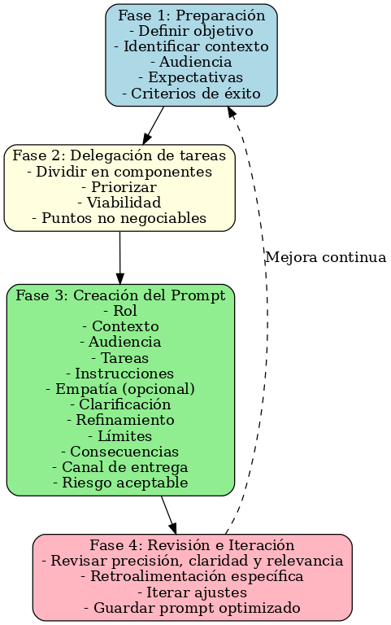

-
Algoritmo para la Comunicación Efectiva y Acertiva entre Humanos y LLM

Fase 1: Preparación
-
Definir el objetivo principal: El
usuario humano debe tener claro qué desea lograr con
la interacción (información, análisis, creatividad,
etc.). Se debe diferenciar entre objetivos
cognitivos (información, análisis) y creativos
(texto, narrativa, ideas).
Ejemplo: "Necesito redactar un correo profesional para convencer a un cliente potencial." -
Identificar el contexto:
Proporciona detalles sobre la situación o el
problema que se está abordando.
Ejemplo: "El cliente está interesado en nuestros servicios de consultoría, pero aún tiene dudas sobre los beneficios." -
Definir la audiencia: Especifica
quién recibirá la información generada por el
LLM.
Ejemplo: "El destinatario es un gerente de nivel medio con conocimientos básicos sobre consultoría." -
Establecer expectativas: Define el
tono, estilo y nivel de detalle esperado.
Ejemplo: "El tono debe ser profesional pero cercano, evitando tecnicismos innecesarios." -
Establecer criterios de éxito:
Definir los criterios de éxito desde el inicio para
la comunicación efectiva y acertiva.
Ejemplo: “Quiero que la respuesta sea aplicable en la práctica sin requerir correcciones mayores”.
Fase 2: Delegación de tareas
-
Dividir la tarea en componentes claros:
Separa la solicitud en partes manejables.
Ejemplo:- Tarea 1: Redactar un párrafo introductorio que capte la atención del cliente.
- Tarea 2: Explicar brevemente los beneficios de nuestros servicios.
- Tarea 3: Incluir una llamada a la acción clara.
-
Priorizar las tareas: Indica qué
parte es más importante o crítica.
Ejemplo: "Primero quiero enfocarme en la introducción, ya que es clave para captar la atención." -
Evaluar la adecuación de la tarea:
Pregunta: ¿Esta tarea es adecuada para un LLM? Si
no, busca alternativas.
Ejemplo: "No le pediré al LLM que evalúe datos financieros complejos, ya que podría cometer errores." -
Puntos no negociables:Las tareas
deben contener instrucciones claras y sin
ambigüedades.
Ejemplo: “El texto debe estar en español neutro y no debe contener jerga” -
Viabilidad:si la tarea requiere
datos externos, validar si el LLM tiene acceso o
no.
Fase 3: Creación del prompt
-
Estructurar el prompt: Incluye los
siguientes elementos:
-
Rol: Indica cómo debe
comportarse el LLM.
Ejemplo: "Actúa como un experto en redacción de correos profesionales."
-
Contexto: Proporciona
detalles relevantes.
- Rol del interlocutor: Indicar mi rol.
- Situación concreta: Describir el contexto.
- Impacto buscado: Describir el objetivo final.
Ejemplo: "Soy CIO de una startup de Ciberseguridad. El cliente está interesado en nuestros servicios de consultoría, pero aún tiene dudas."
-
Audiencia: Define quién
recibirá la información.
Ejemplo: "El destinatario es un gerente general con conocimientos básicos en ciberseguridad."
-
Tareas: Divide y prioriza
las tareas. Indicar acciones únicas en verbo
infinitivo, alcance y tiempo. Eliminar
ambigüedades.
Ejemplo: "Redacta un párrafo introductorio que explique por qué nuestra consultoría puede ayudarle a resolver sus problemas. Genera un plan de contenidos de nuestros servicios para LinkedIn."
-
Instrucciones: Indicar cómo
debe presentar su respuesta.
- Formato: tabla, ensayo, código, infografía.
- Idioma y extensión: "200-250 palabras", "español neutro".
- Canal de entrega: ¿se quiere la respuesta como bloque de texto, como puntos numerados, o en un archivo exportable?
- Nivel de riesgo aceptable: si la respuesta puede tener imprecisiones, indicar el margen tolerado.
Ejemplo: "Formato tabla; 200 palabras por post; usa emojis cibernéticos discretos".
-
Simular empatía (opcional):
Solicita que el LLM adopte un tono empático
si es relevante.
- Tono: técnico, cercano, lúdico, directivo.
Ejemplo: "Imagina que estás hablando con un cliente preocupado por su negocio. Usar un tono profesional-empático".
-
Clarificación: Indicar cómo
la IA puede aclarar dudas directamente
contigo.
- ¿Autorizar al modelo LLM a solicitar datos si detecta lagunas? Sí o No.
- Listar preguntas típicas que puedan surgir.
Ejemplo: "Antes de empezar pregunta por el presupuesto de anuncios".
-
Refinamiento: Indicar qué
puntos volver a repasar y en qué focos
concentrarse.
- ¿Se realizarán iteraciones planificadas sobre las respuestas del LLM? Sí o No.
- Focalizar: indicar los puntos en los que se debe concentrar las iteraciones.
Ejemplo: "Tras la propuesta inicial, revisa métricas y sugiere KPI en la segunda iteración".
-
Límites: Establece
restricciones claras.
Ejemplo: "No inventes datos ni uses tecnicismos innecesarios."
-
Consecuencias: Define cómo
manejar errores.
Ejemplo: "Si cometes un error, te pediré que intentes nuevamente con un enfoque diferente. Si persisten los errores se cambiará de LLM".
-
Usar ejemplos (opcional):
Proporciona ejemplos de respuestas deseadas
para guiar al LLM.
Ejemplo: "Aquí tienes un ejemplo de un correo similar que funcionó bien: [insertar ejemplo]."
-
Rol: Indica cómo debe
comportarse el LLM.
Fase 4: Revisión e iteración
-
Revisar la respuesta: Evalúa la
precisión, claridad y relevancia de la respuesta
generada por el LLM.
Ejemplo: "La introducción es buena, pero falta mencionar específicamente los beneficios de nuestros servicios." -
Iterar según sea necesario: Realiza
ajustes en el prompt o solicita mejoras
específicas.
Ejemplo: "Por favor, incluye un ejemplo concreto de cómo hemos ayudado a otros clientes." -
Documentar el proceso: Registra los
cambios realizados para mejorar futuras
interacciones.
Ejemplo: "La primera versión fue demasiado genérica; ajusté el prompt para pedir ejemplos específicos." -
Evaluar la calidad final: Usa
criterios específicos para medir el éxito:
- Precisión: ¿Son correctos los datos y la información?
- Claridad: ¿Es fácil de entender para la audiencia?
- Relevancia: ¿Cumple con el objetivo principal?
- Ciclo de retroalimentación formal: Marcar qué parte estuvo bien y qué parte falló, en lugar de pedir mejoras en bloque.
-
Guardar un “prompt final optimizado” como
plantilla para futuros casos similares.
Tips para mejorar el prompt:
- Ser imperativo
- Integrar a la audiencia
- Permitir preguntas
- Propinas/ Amenazas/ Empatía
- Ejemplos output
- Palabras clave “debes” “tu tarea es”